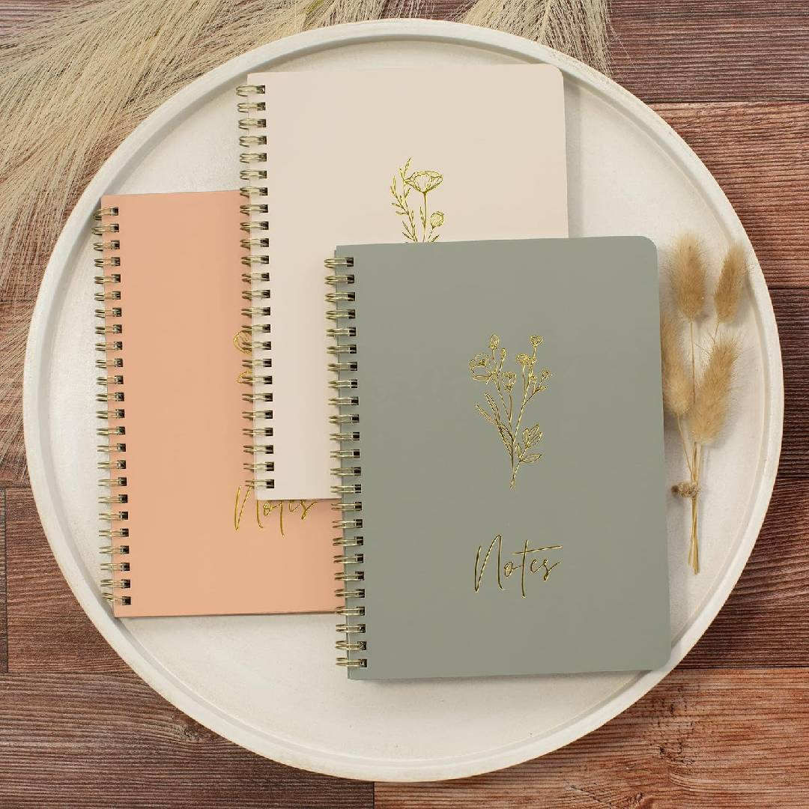

El Ancla de las Palabras
¿Y si tu mente no se detiene?
Hay momentos en los que nuestra mente parece entrar en un estado de hiperactividad. Los pensamientos se acumulan, van de un lado a otro y sentimos que no podemos detenerlos.
Cuando todo parece estar ocupando espacio en nuestra cabeza, quizá no necesitamos encontrar inmediatamente una respuesta. Tal vez primero necesitamos sacar todo aquello que la está llenando.
¿Y cómo podemos hacerlo?
A través de algo tan sencillo como escribir.
El Ancla de las Palabras
Toma tu libreta favorita, busca un lugar tranquilo y comienza a escribir todo lo que venga a tu mente.
No necesitas escribir bonito, escribir bien ni encontrar las palabras correctas. Solo deja que salgan.
Vacía la papelera de tu cabeza
No necesitas una estructura. No necesitas pensar qué vas a escribir. Tampoco necesitas corregir tus palabras.
Simplemente comienza.
Escribe aquello que estás pensando, lo que te preocupa, lo que tienes pendiente, lo que te molesta, lo que no entiendes, lo que deseas o incluso aquello que parece no tener ningún sentido.
Deja que todo salga.
Puedes imaginar que tu mente es como una papelera llena de pensamientos. Cada palabra que llevas al papel es algo que deja de ocupar espacio dentro de ti.
No estás intentando crear un texto perfecto. Estás haciendo espacio.
Quédate escribiendo todo el tiempo que necesites. Permítete vaciar poco a poco todo aquello que estaba guardado en tu interior.
Una libreta para dejar salir tus pensamientos
Si quieres convertir este ejercicio en un pequeño ritual personal, tener una libreta destinada únicamente a tus pensamientos puede hacerlo aún más especial.
Puedes utilizar una para escribir libremente, otra para tus reflexiones o simplemente elegir aquella que sientas que quieres convertir en tu espacio personal.

Un hermoso set de libretas puede convertirse en ese pequeño espacio que es solo tuyo.
Si te gusta la idea, puedes conocer este set en Amazon:
Ver el set de libretasEste es un enlace de afiliado. Si realizas una compra a través de él, Alma de Jade puede recibir una pequeña comisión, sin costo adicional para ti.
Escribir sin juzgar
Una de las partes más importantes de este ejercicio es no juzgar lo que escribes.
No importa si una frase no tiene sentido. No importa si repites una palabra diez veces. No importa si cambias de tema constantemente.
Este momento no es para analizar tus pensamientos.
Es simplemente para dejarlos salir.
Si conoces la escritura cursiva, puedes probarla. Para algunas personas, escribir de esta manera permite que la mano avance con mayor fluidez y que los pensamientos encuentren más fácilmente su camino hacia el papel.
Pero no existe una forma correcta de hacerlo. Puedes escribir en cursiva, en letra de imprenta, hacer listas o incluso llenar páginas enteras con palabras sueltas.
Lo importante es encontrar la manera que te permita expresarte con mayor libertad.
Cuando hayas terminado
En algún momento notarás que los pensamientos comienzan a disminuir. Quizá llegue un momento en el que simplemente ya no tengas nada más que escribir.
Entonces puedes detenerte.
Cierra tu libreta.
Deja el lapicero a un lado.
Respira profundamente.
Y observa cómo se siente tu mente después de haber dejado salir todo aquello que llevaba dentro.
Tal vez encuentres un poco más de silencio.
Tal vez encuentres claridad.
O quizá simplemente sientas alivio.
A veces no necesitábamos encontrar una respuesta.
Solo necesitábamos hacer espacio para poder escucharla.
Pequeñas reflexiones para acompañar tu proceso interior.
También podemos cuidar a los demás
Cuando hacemos espacio dentro de nosotros, también podemos encontrar espacio para mirar hacia quienes necesitan apoyo.
Si este momento de reflexión te inspira a ayudar, puedes realizar una donación directamente a la Cruz Roja Colombiana.
Quiero ayudarLa donación se realiza directamente en el sitio oficial de la Cruz Roja Colombiana. Alma de Jade no recibe ni gestiona estas donaciones.
Y ahora, vuelve a ti
Después de escribir, regálate unos segundos antes de continuar con tu día.
Cierra los ojos si te resulta cómodo.
Inhala.
Exhala.
Siente el espacio que acabas de crear dentro de ti.
No tienes que resolverlo todo ahora.
A veces, cuidar de nosotros mismos comienza con algo tan pequeño como detenernos, tomar un lapicero y permitir que nuestras palabras hagan espacio.
Porque cuando la mente se siente a la deriva, unas pocas palabras pueden convertirse en un ancla.
Alma de Jade — bienestar para ti, cuidado para el mundo.